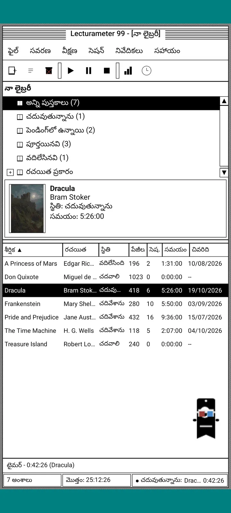
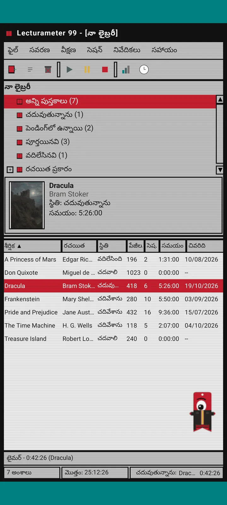
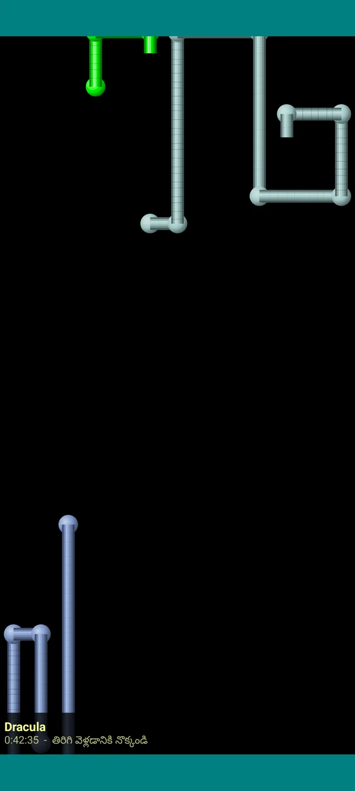

Lecturameter 1999
1999 లో CD-ROM నుండి ఇన్స్టాల్ చేసినట్లుగా Lecturameter. విండోలు, మెనూలు, పట్టికలతో యాప్కు ప్రత్యామ్నాయ క్లయింట్, మీ నిజమైన బ్యాకప్లను తెరుస్తుంది.

ఇది ఏమిటి
తొంభైల చివరి నాటి డెస్క్టాప్ ప్రోగ్రామ్, మీ ఫోన్లో నడుస్తుంది. టీల్ రంగు డెస్క్టాప్పై ఒక విండో, మెనూ బార్, టూల్బార్, ఫోల్డర్ ట్రీ, దట్టమైన పట్టిక, స్టేటస్ బార్.
- లైబ్రరీ ట్రీ: అన్ని పుస్తకాలు, చదువుతున్నవి, పెండింగ్, చదివినవి, వదిలేసినవి, రచయిత వారీగా
- శీర్షిక, రచయిత, స్థితి, పేజీలు, సెషన్లు, సమయం, చివరిగా చదివినది ఉన్న పట్టిక. క్రమబద్ధీకరించడానికి కాలమ్ హెడర్ను నొక్కండి
- Lecturameter వాడే కేటలాగ్తోనే నిజమైన పుస్తకాల శోధన
- Lecturameter బ్యాకప్, Goodreads CSV లను దిగుమతి, ఎగుమతి చేస్తుంది. మీ డేటా ఏదీ కోల్పోకుండా వెళ్తుంది, వస్తుంది

ఇది ఎందుకు ఉంది
ఒక ప్రయోగం: అసలు యాప్ను ముట్టుకోకుండా, పూర్తిగా భిన్నమైన డిజైన్ సూత్రాలతో Lecturameter ఆలోచనను మొదటి నుండి మళ్లీ నిర్మించడం. అన్ని పునర్వ్యాఖ్యానాలలో 1999 నాది నాకు బాగా నచ్చింది, అందుకే దాన్ని సరదాగా పూర్తి చేసి పూర్తి క్లయింట్గా మార్చాను. ఇది ఉద్దేశపూర్వకంగానే Lecturameter కంటే సరళం: ఇది ఒక ప్రయోగం, సూత్రప్రాయంగా ఇకపై అభివృద్ధి చేయబడదు.
- ఆకుపచ్చ LCD డిస్ప్లేతో తేలియాడే విండోలో టైమర్. ఇది కదులుతుంది, టాస్క్బార్కు మినిమైజ్ అవుతుంది, స్టేటస్ బార్లో లెక్కిస్తూనే ఉంటుంది
- ఆపినప్పుడు, సెషన్ సేవ్ డైలాగ్ మీ పేజీలను అడిగి, Lecturameter లాగే మీ వేగాన్ని లెక్కిస్తుంది
- సేవ్ చేసిన సెషన్లు Lecturameter సెషన్లే: Lecturameter 1999 బ్యాకప్ను ఎగుమతి చేసి Lecturameter లో దిగుమతి చేస్తే అవి ఆధునిక యాప్కు తిరిగి వస్తాయి.

చదువు నివేదిక
గణాంకాలు ముద్రించిన నివేదికలా ఉంటాయి: సారాంశం, బ్లాక్ బార్లతో ఒక్కో పుస్తకానికి సమయం, రోజుకు పేజీల వేగం, అక్షరాలతో గీసిన సంవత్సర క్యాలెండర్, చివరి ఏడు రోజులు.

సెషన్ చరిత్ర
ప్లస్, మైనస్తో ట్రీలో పుస్తకం వారీగా సమూహపరచిన సెషన్లు, పైన ఐదు అంకెలతో: సెషన్లు, మొత్తం సమయం, పేజీలు, నిమిషానికి పేజీలు, రోజుకు పేజీలు.

సెషన్ను సేవ్ చేయి
తేదీ, నిమిషాలు, మొదటి, చివరి పేజీ, వ్యాఖ్య. మీరు టైప్ చేస్తుంటే సారాంశం పేజీలను, వేగాన్ని లెక్కిస్తుంది. చివరి పేజీకి చేరితే, పుస్తకం పూర్తయిందా అని అడుగుతుంది.

Pagi 99
Pagi కూడా 1999 కి ప్రయాణిస్తుంది: ఆ కాలపు ఆఫీస్ అసిస్టెంట్ల లాగే పిక్సెల్లుగా, స్క్రీన్పై స్వేచ్ఛగా. మీరు దాన్ని లాగవచ్చు, నొక్కితే ఒక మాట చెబుతుంది, పసుపు బెలూన్లలో చిట్కాలు చూపిస్తుంది.
థీమ్లు
Classic 98 ఉచితం, డిఫాల్ట్ కూడా. ప్యాక్ మరో ఆరింటిని జోడిస్తుంది, ప్రతిదానికీ సొంత నేపథ్యం, సొంత శబ్దాలు ఉంటాయి.

View మెనూ నుండి ఎంచుకోండి
View, Theme... ఏడు థీమ్లతో విండో తెరుస్తుంది. మార్పు అన్ని విండోలకు, టైమర్కు, Pagi కి ఒకేసారి చేరుతుంది.
- Classic 98, ఉచితం, డిఫాల్ట్: బూడిద రంగు విండోలు, నేవీ టైటిల్ బార్లు, టీల్ డెస్క్టాప్
- థీమ్ ప్యాక్: 1984, Gumdrop, Memory, Towers, Core, 8-bit
- ప్రతి థీమ్కు సొంత డెస్క్టాప్ నేపథ్యం, ట్యాప్లు, విండోలు, టైమర్ కోసం సొంత శబ్దాలు ఉంటాయి
- నిశ్శబ్దంగా చదివితే View, Theme sounds శబ్దాలను ఆఫ్ చేస్తుంది

Classic 98
బూడిద రంగు విండోలు, నేవీ టైటిల్ బార్లు, టీల్ డెస్క్టాప్. ఉచితం, యాప్ దీనితోనే తెరుచుకుంటుంది.

1984
వన్-బిట్ నలుపు-తెలుపు డెస్క్టాప్, చుక్కల నమూనాలు, చతురస్ర విండోలతో.

Gumdrop
పారదర్శక రంగుల ప్లాస్టిక్, గుండ్రని బటన్లు, నేపథ్యంలో చారలు.

Memory
తొంభైల నాటి డిస్క్ కన్సోల్ మెనూలు, ముదురు నీలి రంగుల్లో.

Towers
తొంభైల నాటి మరో డిస్క్ కన్సోల్, రాత్రి నీలి రంగు, లేత నీలి గీతలతో.

Core
నలుపు, ఆకుపచ్చ కన్సోల్, ఎప్పటికీ ఆరిపోని స్క్రీన్ లాగా.

8-bit
లావు పిక్సెల్లు, తక్కువ రంగులు, బ్లాకుల్లాంటి అక్షరాలు.

డబ్బు చెల్లించే ముందు ప్రయత్నించండి
లాక్ అయిన థీమ్ను నొక్కితే యాప్ మొత్తం దానికి మారుతుంది. కొనకుండా మూసివేస్తే, మునుపటి థీమ్ తిరిగి వస్తుంది.
స్క్రీన్సేవర్లు
టైమర్ నడుస్తూ, మీరు ఫోన్ను ముట్టుకోనప్పుడు మాత్రమే ఇవి కనిపిస్తాయి. 1, 3 లేదా 5 నిమిషాలు వేచి ఉంటాయి, లేదా ఎప్పుడూ రావు. ఒక్క ట్యాప్తో తిరిగి వస్తారు, టైమర్ లెక్కిస్తూనే ఉంటుంది.

ఎగిరే పుస్తకాలు
నల్లటి స్క్రీన్ మీదుగా అట్టలను రెక్కల్లా ఆడిస్తూ ఎగిరే పిక్సెల్ పుస్తకాలు.

అక్షరాల క్షేత్రం
ఎన్నో లిపుల అక్షరాలు నక్షత్రాల క్షేత్రంలా తేలుతూ దాటిపోతాయి.

పేజీ పైపులు
పేజీలతో చేసిన పైపులు స్క్రీన్ నిండే వరకు తమను తాము గీసుకుంటాయి.

ఎగిరిపడే Pagi
స్క్రీన్ అంచులకు తగిలి ఎగిరిపడే Pagi.

చదువు గడియారం
సెషన్ సమయం పెద్ద LCD అంకెల్లో.

Pagi కోసం దుస్తులు
Pagi 99 కోసం ఎనిమిది దుస్తులు. View, Pagi's costume... లో ఎంచుకోండి, చెల్లించే ముందు ధరించి చూడవచ్చు.
- క్యాసెట్ ప్లేయర్
- వెనక్కి తిప్పిన క్యాప్
- 3D కళ్లద్దాలు
- నియాన్ సన్ గ్లాసెస్
- చేతిలో ఫ్లాపీ డిస్క్
- లెదర్ జాకెట్
- జేబు పెంపుడు జీవి
- అట్ట కిరీటం
స్టోర్
యాప్ ఉచితం, మీ చదువును నమోదు చేయడానికి పూర్తిగా సరిపోతుంది. కొనగలిగేవి కేవలం రూపాన్ని మాత్రమే మారుస్తాయి.
మొత్తం యాప్, సమయ పరిమితి లేకుండా.
- లైబ్రరీ, శోధన, టైమర్, సెషన్లు
- చదువు నివేదిక, సెషన్ చరిత్ర
- Lecturameter బ్యాకప్, Goodreads CSV, లోపలికి, బయటికి
- Classic 98 థీమ్, Pagi 99
- ఖాతా లేదు, ప్రకటనలు లేవు
ఒక్కసారి చెల్లింపులు, సబ్స్క్రిప్షన్లు లేవు.
- థీమ్ ప్యాక్, €3.49: నేపథ్యం, శబ్దాలతో 6 థీమ్లు, ప్లస్ స్క్రీన్సేవర్లు
- స్క్రీన్సేవర్లు, €1.99: 5 స్క్రీన్సేవర్లు
- Pagi దుస్తులు, €1.99: 8 దుస్తులు
- మొత్తం 1999, €4.49: థీమ్లు, స్క్రీన్సేవర్లు, దుస్తులు
నాకు ఒక కాఫీ కొనిపెట్టాలనుకుంటే, సహాయం మెనూలో ఐచ్ఛిక టిప్స్ ఉన్నాయి.
థీమ్లు, దుస్తులను చెల్లించే ముందు లైవ్లో ప్రయత్నించవచ్చు. కొనకుండా మూసివేస్తే, మీ దగ్గర ఉన్నవి తిరిగి వస్తాయి.
Lecturameter తో పోలిస్తే ఏం మారింది
Lecturameter లాగే
- అదే డేటా: పుస్తకాలు, సెషన్లు, స్థితులు, రేటింగ్లు, నోట్స్. రెండు యాప్లలో బ్యాకప్ ఫైల్ ఒకటే.
- శీర్షిక లేదా రచయితతో పుస్తకాల శోధన.
- నిజమైన టైమర్: బ్యాక్గ్రౌండ్లో, యాప్ మూసివేసినా లెక్కిస్తూనే ఉంటుంది.
- ఖాతా లేదు, ప్రకటనలు లేవు, పుస్తకాలు వెతకడానికి తప్ప కనెక్షన్ అక్కర్లేదు.
- Lecturameter లో ఉన్న భాషలే.
1999 ఎడిషన్లో మాత్రమే
- 1999 నాటి డెస్క్టాప్ ఇంటర్ఫేస్. Material లేదు.
- నిజమైన విండోలు: వాటిని లాగవచ్చు, మినిమైజ్ చేయవచ్చు, ఎక్స్ గుర్తుతో మూసివేయవచ్చు.
- అక్షరాలతో గీసిన క్యాలెండర్తో టెక్స్ట్ రూపంలో చదువు నివేదిక.
- ఎక్కువసేపు నొక్కితే కాంటెక్స్ట్ మెనూ, కీబోర్డ్ కనెక్ట్ చేస్తే కీబోర్డ్ షార్ట్కట్లు.
- చిట్కా బెలూన్లతో పిక్సెల్ Pagi 99.
- సొంత నేపథ్యం, శబ్దాలతో ఐచ్ఛిక థీమ్లు, టైమర్ నడుస్తున్నప్పుడు స్క్రీన్సేవర్లు, Pagi కోసం దుస్తులు.
ఉద్దేశపూర్వకంగా వదిలేసినవి
- Pro లేదు, సబ్స్క్రిప్షన్ లేదు. చదువును నమోదు చేయడం అంతా ఉచితం, స్టోర్ రూపాలను మాత్రమే అమ్ముతుంది.
- సవాళ్లు, Bingoలు, వార్షిక Wrapped, విడ్జెట్లు లేవు.
- ఇమ్మర్సివ్ సెషన్, వాతావరణ శబ్దాలు, Google Drive బ్యాకప్ లేవు. బ్యాకప్ ఫైల్గా సేవ్ అవుతుంది.
క్లోజ్డ్ టెస్ట్
Lecturameter 1999 Google Play లో క్లోజ్డ్ టెస్టింగ్లో ఉంది. iOS తర్వాత వస్తుంది, ఇంకా తేదీ లేదు.
- గ్రూప్లో చేరండి groups.google.com/g/lecturameter-1999
- టెస్టర్గా నమోదు చేసుకోండి: play.google.com/apps/testing/com.lecturameter.r1999
- ఇక్కడ నుండి ఇన్స్టాల్ చేయండి: Google Play
Google Play లో క్లోజ్డ్ టెస్టింగ్లో, iOS తర్వాత. బ్లాగ్ పోస్ట్ చదవండి ఇది ఎక్కడ నుండి వచ్చిందో, ఏమి ఆశించవచ్చో తెలుసుకోవడానికి.